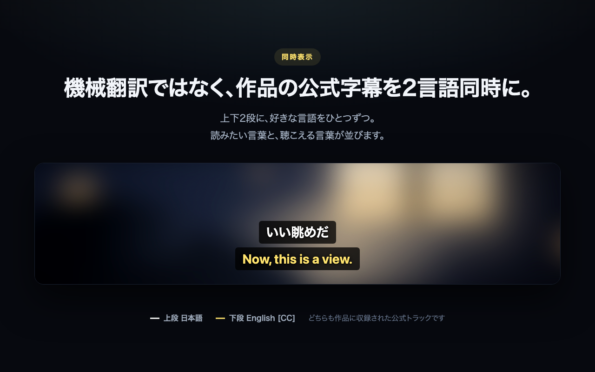
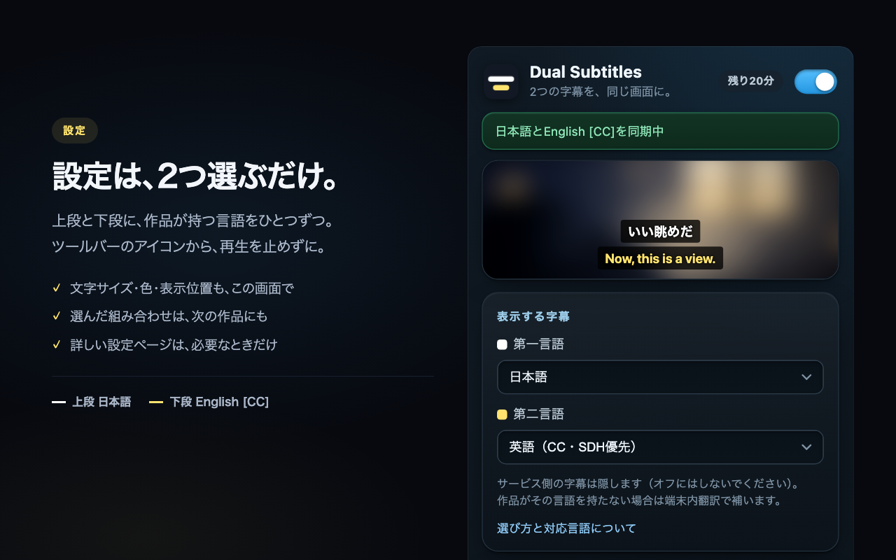

2つの字幕を、同時に。
利用可能な字幕言語から、選んだ2つを同時表示。字幕の言語を切り替えて行き来する手間を減らします。
いつもの動画に、もうひとつの字幕。
聞き取れなかった、その一言。
2つの字幕で確かめながら、
好きな作品を自分のペースで楽しもう。
毎日20分、すべての機能を無料で。購入は後から。
Disney+：対応開発・検証中
現在提供中のPrime Video・Netflix対応とは異なります。利用開始時期は未定です。

現在、拡張機能の設定画面は日本語のみです。作品・字幕言語・ブラウザー環境によって利用できる機能が異なります。動画サービスの契約は別途必要です。購入前に、お使いの環境で無料版をお試しください。
WATCH. NOTICE. UNDERSTAND.
動画を楽しむ時間を、言葉に触れる時間へ。
利用可能な字幕言語から、選んだ2つを同時表示。字幕の言語を切り替えて行き来する手間を減らします。
必要な言語の字幕が作品にあれば、その字幕を優先。ない言語は、対応環境で端末内翻訳が補います。
無料版も機能は同じ。毎日20分、見たい作品とブラウザーで使えることを確かめられます。
GET STARTED
ライセンスの購入は、
字幕が表示できてからで大丈夫。
Chrome Web Store または Edge Add-ons から、DualSubをインストールします。
Prime VideoまたはNetflixで作品を再生。すでに開いていた動画タブは再読み込みしてください。
DualSubの設定で、利用可能な字幕言語から2つを選択。2つの字幕が表示されることを確認して、視聴を楽しみましょう。

SIMPLE PLANS
使える機能は同じ。違いは、1日の利用時間です。
いつもの作品で、使い心地を確かめる。
年額プランは US$35 / 年
Proは継続課金のサブスクリプションです。動画サービスの利用料金は含まれません。税・通貨換算後の金額、契約・解約条件は購入画面でご確認ください。
GOOD TO KNOW
Prime VideoとNetflixを対象としたデスクトップ向け拡張機能です。すべての作品・字幕言語での動作を保証するものではありません。お使いの作品で、購入前に無料版の表示をご確認ください。
Disney+対応は開発・検証中です。現在提供中のPrime Video・Netflix対応とは区別しています。利用開始時期は未定で、現時点での利用を保証するものではありません。
このページで案内するDualSubは、デスクトップ版Chrome／Edge向けです。スマートフォンの動画アプリ向けの拡張機能ではありません。
現在、設定画面は日本語のみです。字幕として選べる言語と、設定画面の言語は異なります。
まず動画サービス側の字幕がオンか確認し、インストール前から開いていた動画タブを再読み込みしてください。作品に希望の字幕がない場合や、ブラウザー・言語が端末内翻訳に対応していない場合は、希望どおりに表示できないことがあります。
対応するブラウザー・言語・環境では端末内翻訳を利用できます。すべての環境や言語で利用できるわけではなく、翻訳の品質も内容により異なります。
機能は同じです。無料版は1日20分の利用枠があり、ProはDualSubの1日の時間制限を解除します。動画サービス自体の契約は、どちらも別途必要です。
YOUR NEXT SCENE, IN TWO LANGUAGES.
いつもの作品で、まずは動作を確認。